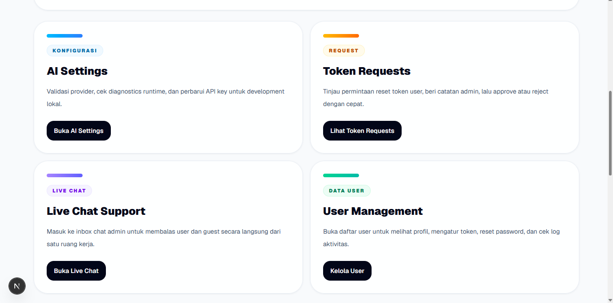
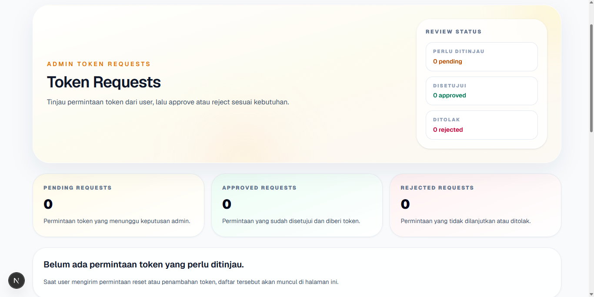
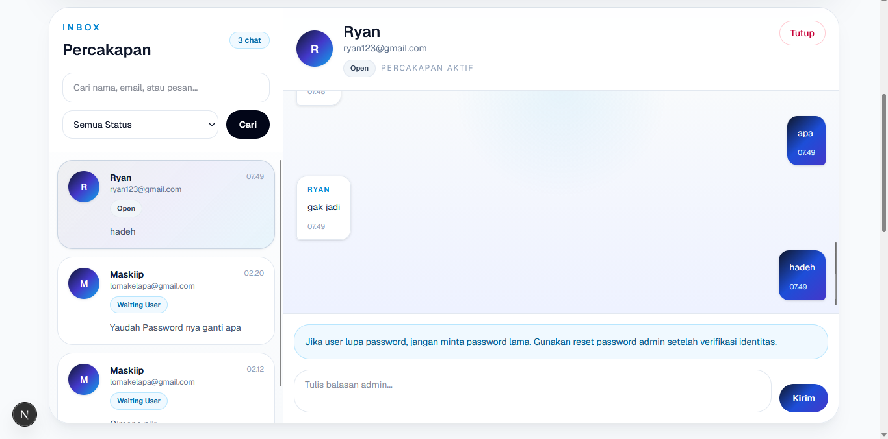

Slide 15 · Fitur Admin
Admin Dashboard

Admin Dashboard
Menjadi titik ringkas untuk membaca kondisi platform secara cepat.
Membantu admin mengevaluasi penggunaan fitur dan performa layanan.
Token Request

Token Request
Admin meninjau, menyetujui, atau menolak permintaan token dari user.
Mendukung pengelolaan biaya AI dan stabilitas pengalaman penggunaan.
Live Chat Support

Live Chat Support
Percakapan dapat dipantau dan dibalas tanpa keluar dari panel admin.
Meningkatkan kualitas bantuan dan mempercepat penyelesaian masalah.
User Management
Memastikan hanya role yang sesuai dapat mengakses menu admin dan fitur sensitif.
Mendukung pengelolaan akun user sekaligus pemantauan kebutuhan operasional harian.
AI Settings tersedia sebagai pengaturan tambahan untuk melihat provider, model aktif, dan diagnostics runtime.
Pendekatan ini membuat VibePlan AI layak dioperasikan, bukan hanya didemokan.